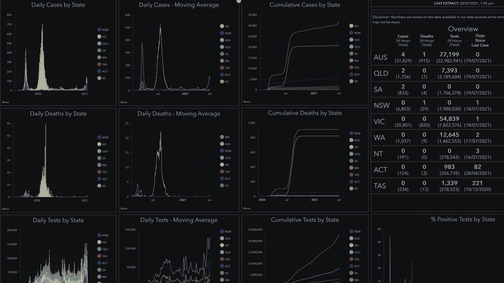

CRISPER National Summary Dashboard
Interactive dashboard of cases, deaths, and tests. Daily numbers, cumulative numbers, and moving average (7 or 14 days). Filter by dates and states. Updated every 3 hours from health departments and other source data.